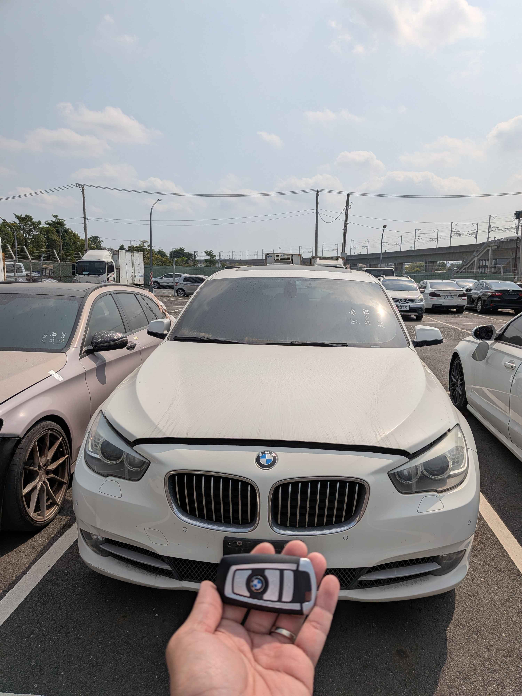

現場實拍：高雄仁武 BMW 535i 智慧鑰匙全丟現場解碼完工
仁武區 BMW 緊急救援：告別拖吊等待
一位家住高雄仁武的 2012 年式 BMW GT 535i 車主，因不慎將唯一的一把智慧鑰匙遺失，導致車輛鎖死在自家車庫。面對原廠長達兩週的鑰匙訂購期與高昂的拖吊費用，車主聯繫了極致核心。我們在 45 分鐘內抵達現場，並隨即展開專業的救援作業。
技術細節：F 系列防盜數據重構
針對 BMW F 系列車型的電子防盜架構，技師首先執行無損開鎖程序進入車室。隨後透過 OBDII 接口連結專業行動工作站，直接採集防盜模組內的加密數據。
- • 零拆卸施工： 全程免拆卸車內電腦或飾板，保護原車內裝完整性。
- • 快速解碼： 採用高階運算伺服器，現場 30 分鐘內完成防盜碼讀取。
- • 功能同步： 新配製的智慧鑰匙完整支援 Keyless Go 感應功能及電動尾門操作。
在確認新鑰匙各項功能（包含舒適進入、引擎一鍵啟動）運作正常後，技師亦協助車主在系統中註銷遺失的舊鑰匙 ID，確保車輛安全。極致核心的高效率服務，讓車主在當天下午即可重新開車出門。